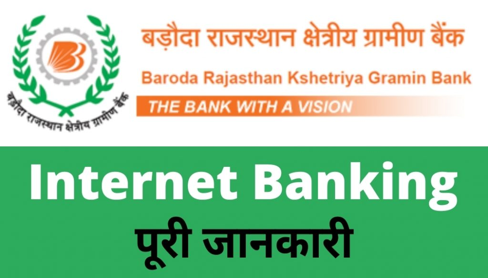

BRKGB(Baroda Rajasthan Kshetriya Gramin Bank) Internet Banking kya hai यह जानने से पहले आइए जानते हैं की इंटरनेट बैंकिंग होता क्या है?
दोस्तों इंटरनेट बैंकिंग को हम ऑनलाइन बैंकिंग भी कह सकते हैं इंटरनेट बैंकिंग के जरिए वह सभी सेवाएं जैसे पैसे की निकासी करना, बैंक में पैसे जमा करना, बैंक में नया खाता खोलना, लोन के लिए अप्लाई करना किसी भी तरह की Services जो हम अपने नजदीकी बैंक शाखा में जाकर लेते हैं।
इस तरह की सभी Services अगर हमें बैंक द्वारा ऑनलाइन इंटरनेट के माध्यम से घर बैठे दिया जाता है और हम बिना बैंक गए अपने सभी जरूरत के बैंकिंग सेवाएं उपयोग करते हैं, इस तरह के बैंकिंग सेवा को इंटरनेट बैंकिंग कहा जाता है।
आज हम इसी तरह के एक इंटरनेट बैंकिंग सेवा BRKGB (Baroda Rajasthan Kshetriya Gramin Bank) के बारे में जानने वाले हैं, तो अगर आप आपने भी बड़ौदा राजस्थान क्षेत्रीय ग्रामीण बैंक में खाता खोल रखा है,आप बैंक में बार-बार जाने के झंझट से परेशान हैं और BRKGB (Baroda Rajasthan Kshetriya Gramin Bank) इंटरनेट बैंकिंग सेवा लेना चाहते हैं तो आप बिल्कुल सही जगह आए हैं।
आज हम आपको बताने वाले हैं कि आप BRKGB (Baroda Rajasthan Kshetriya Gramin Bank) में इंटरनेट बैंकिंग आप कैसे ले सकते हैं, इंटरनेट बैंकिंग के माध्यम से पैसे का आदान-प्रदान कैसे कर सकते हैं ,Balance Enquiry कैसे कर सकते हैं इन सभी तरह के ऑनलाइन Services के बारे में हम आज आपको बताने वाले हैं तो प्लीज लास्ट तक इस पोस्ट को जरूर पढ़िएगा ,तो आइए स्टार्ट करते हैं:-
BRKGB Net Banking के क्या फायदे हैं?
BRKGB (Baroda Rajasthan Kshetriya Gramin Bank) इंटरनेट बैंकिंग के फायदे की बात करें तो इस प्रकार से हैं:-
- जैसा कि मैंने आपको बताया आप घर बैठे हैं BRKGB (Baroda Rajasthan Kshetriya Gramin Bank) नेट बैंकिंग के जरिए NEFT, RTGS, आइएमपीएस के माध्यम से कहीं भी पैसे भेज सकते हैं।
- किसी भी तरह का बिल पेमेंट या रिचार्ज जैसे मोबाइल या डीटीएच रिचार्ज फोन इलेक्ट्रिसिटी बिल सभी तरह के पेमेंट आप ऑनलाइन आसानी से घर बैठे कर सकते हैं।
- डेबिट कार्ड के लिए भी आप ऑनलाइन अप्लाई कर सकते हैं नेट बैंकिंग के माध्यम से।
- ऑनलाइन मिनी स्टेटमेंट निकाल सकते हैं।
- Axis Bank Consolidated Charge Kya hota hai?
- इन कारणों से Axis Bank Consolidated Charge कट सकता है :-
- Axis Bank कंसोलिडेटेड डीपी चार्ज क्या होता है (what has consolidated DP charges in axis bank)?
कौन-कौन सी Services BRKGB NetBanking के जरिए हम ले सकते हैं?
- ऑनलाइन मोबाइल नंबर चेंज कर सकते हैं।
- क्रेडिट कार्ड के लिए अप्लाई कर सकते हैं
- चेक बुक रिक्वेस्ट कर सकते हैं।
- डेबिट कार्ड एक्टिवेट या डीएक्टिवेट कर सकते हैं।
BRKGB Net Banking कौन-कौन से डिवाइस में काम करेगा?
BRKGB (Baroda Rajasthan Kshetriya Gramin Bank) नेट बैंकिंग किसी भी डिवाइस में जिसमें इंटरनेट हो आसानी से काम करेगा चाहे वह एंड्राइड मोबाइल हो, या कंप्यूटर हो, या लैपटॉप हो किसी भी डिवाइस में यूज कर सकते हैं सिर्फ उस डिवाइस में इंटरनेट कनेक्शन होना चाहिए।
{kind=link}

Step By Step BRKGB Net Banking Registration Process In Hindi
- BRKGB (Baroda Rajasthan Kshetriya Gramin Bank) इंटरनेट बैंकिंग रजिस्ट्रेशन करने के लिए सबसे पहले आपके पास बड़ौदा राजस्थान क्षेत्रीय ग्रामीण बैंक में किसी भी तरह का जैसे बचत खाता या चालू खाता होना चाहिए।
- इसके बाद आपको अपने खाते को brkgb इंटरनेट बैंकिंग के साथ कनेक्ट करना होगा।
- खाते को इंटरनेट बैंकिंग लिंक कर देने के बाद आपको यूजर आईडी और पासवर्ड मिल जाएगा। खाते को लिंक करने का प्रोसेस आपको नीचे बताया हुआ है।
- इस यूजर आईडी और पासवर्ड के साथ आप लॉगइन करके अपने अकाउंट के डैशबोर्ड में आ जाएंगे।
- अपने खाते के डैशबोर्ड में आने के बाद आपको सबसे पहले अपना लॉगिन पासवर्ड चेंज कर लेना है।
- उसके बाद पुनः आपको यूजर आईडी और पासवर्ड डालकर अपने अकाउंट में लॉगिन होना है।
BRKGB Net Banking कौन-कौन से डिवाइस में काम करेगा?
BRKGB New Account LInking Porcess for Internet banking in hindi
सबसे पहले आपको नीचे दिए गए लिंक पर क्लिक करके न्यू अकाउंट लिंकिंग और डाउनलोड कर लेना है उसके बाद आपको इस फार्म को भरकर के अपने नजदीकी शाखा में जाकर जमा करना है और उन्हें बताना है कि आप अपने खाते में इंटरनेट बैंकिंग की सेवा लेना चाह रहे हैं।
तब जाकर के आप के खाते को इंटरनेट बैंकिंग के साथ जोड़ दिया जाएगा।
Download BRKGB New Account LInking Form For Internet Banking
BRKGB internet banking form kaise Bhare?
- सबसे पहले तो आपको ऊपर दिए गए लिंक से इंटरनेट बैंकिंग न्यू अकाउंट लिंकिंग फॉर्म को डाउनलोड कर लेना है।
- इंटरनेट बैंकिंग फॉर्म को भरने के लिए आपको सबसे पहले ऊपर में अपने ब्रांच का नाम डालना है जिस ब्रांच में आपका खाता है।
- उसके नीचे अपना अकाउंट नंबर डालना है 14 डिजिट का यह अकाउंट नंबर होता है।
- उसके बाद नाम एड्रेस मोबाइल नंबर और ईमेल आईडी डाल देना है।
- सब सिग्नेचर के जगह पर अपना सिग्नेचर कर देना है और और बिल्कुल वैसे ही सिग्नेचर करना है जिस तरह से आपने खाता खुल आने के समय सिग्नेचर करा था।
- उसके बाद इस फॉर्म को ब्रांच में जमा करा देना है।
BRKGB Mobile Banking Registration Process In Hindi
- नीचे दिए गए लिंक पर जाकर सबसे पहले आपको बड़ौदा राजस्थान क्षेत्रीय ग्रामीण बैंक का एंड्राइड एप्लीकेशन प्ले स्टोर से डाउनलोड कर लेना है: डाउनलोड लिंक- BRKGB M-Connect
- उसके बाद आपको बड़ौदा एम कनेक्ट एप्लीकेशन को ओपन कर लेना है।
- ओपन करते ही आपको यह कुछ परमिशन एलाऊ करने के लिए बोलेगा तो उसे आपको Allow कर देना है।
- इसके बाद आपको अपना मोबाइल नंबर डाल के ओके पर क्लिक कर देना है, कोई भी मोबाइल नंबर जिस पर आप मोबाइल बैंकिंग एक्टिवेट करवाना चाहते हैं वह आपको यहां डालना है।
- उसके बाद ओटीपी वेरीफिकेशन जैसे ही आएगा आपके सामने एक एक्नॉलेजमेंट आएगा, की आप एक मोबाइल बैंकिंग के कस्टमर नहीं है आपको बैंक में कांटेक्ट करना होगा।
- आपके सामने एक ट्रांजैक्शन आईडी आएगा उस ट्रांजैक्शन आईडी को आप को नोट कर के रख लेना है। और उस ट्रांजैक्शन आईडी को बैंक में जाकर दे देना है।
- उसके बाद बैंक वाले आपके खाते मैं मोबाइल बैंकिंग एक्टिवेट कर देंगे, तब जाकर आप बैंक के सभी Services अपने मोबाइल के माध्यम से यूज़ कर पाएंगे।
BRKGB Internet banking login Process In Hindi
- BRKGB (Baroda Rajasthan Kshetriya Gramin Bank) इंटरनेट बैंकिंग रजिस्ट्रेशन कर लेने के बाद आपको एक यूजर आईडी और पासवर्ड मिलेगा।
- के बाद आपको इस लिंक में चले जाना है:- Baroda RRB Connect
- आपको नीचे में लॉगिन टू नेट बैंकिंग के दो कब मिलेंगे 1. पहला रिटेल यूजर 2. दूसरा कॉरपोरेट यूजर
- आपको अपने हिसाब से जिस तरह के आप ग्राहक हैं अगर आप रिटेल यूजर हैं तो आप रिटेल पर क्लिक कीजिए और बिजनेस यूजर है तो कॉरपोरेट पर क्लिक कीजिए.
- अब आपके सामने फिर से एक नया विंडोज ओपन हो जाएगा .
- यहां पर आपको अपना यूज़र आईडी डाल कर इंटर पर क्लिक कर देना है उसके बाद आपसे पासवर्ड में आएगा तो आपको पासवर्ड डालकर ओके पर क्लिक कर देंगे तो आप अपने अकाउंट में लॉगिन हो जाएंगे.
- इसके बाद आपको सबसे पहले पासवर्ड चेंज करने के लिए बोलेगा तो आपको एक नया पासवर्ड क्रिएट कर लेना है.
Forget Reset Password For BRKGB
- आपको ऊपर के स्टेप को फॉलो करके इंटरनेट बैंकिंग के लॉगइन पेज पर चले जाना है जहां पर यूजर आईडी मांगा जाता है .
- आपको यहां पर आकर अपना user-id सबसे पहले डालना है ,और राइट साइड में आप देखेंगे और गेट रिसेट पासवर्ड का एक लिंक बना हुआ होगा उस पर आपको क्लिक कर देना है.
- उसके बाद आप के फोन पर ओटीपी वेरिफिकेशन हो जाने के बाद आपको नया पासवर्ड बनाने के लिए बोलेगा.
- अब आप अपना नया पासवर्ड बना सकते हैं.
Balance Inquiry Process In Hindi For BRKGB
- सबसे पहले आपको इंटरनेट बैंकिंग यूजर आईडी और पासवर्ड से अपने खाते में लॉगिन हो जाना है।
- उसके बाद आपके सामने आपका डैशबोर्ड ओपन हो जाएगा जिसमें बैंकिंग, अन्य Services , M-PIn देखने को मिलेंगे।
- आपको बैंकिंग वाले ऑप्शन में क्लिक कर देना है, यहां पर आप अपने खाते के संबंधित सभी जानकारी देख पाएंगे।
- अब आपको Balance Enquiry पर क्लिक कर देना है,यहां पर अपना बैलेंस चेक कर पाएंगे।
Online BRKGB me mobile number kaise change kare?
दोस्तों अगर आप BRKGB(Baroda Rajasthan Kshetriya Gramin Bank) इंटरनेट बैंकिंग यूज़ करते हैं तो आप घर बैठे हैं अपना मोबाइल नंबर चेंज कर पाएंगे, आपको सबसे पहले अपने यूजर आईडी और पासवर्ड की मदद से अपने अकाउंट में लॉगिन हो जाना है।
उसके बाद बैंकिंग वाले शिक्षा में चले जाना है बैंकिंग वाले शिक्षण में जाने के बाद यहां आपको अपना प्रोफाइल अपडेट करने के लिए ऑप्शन मिलेगा।
यहां आप अपना मोबाइल नंबर ईमेल आईडी सभी तरह के चेंज आसानी से कर पाएंगे।
Internet banking ke Jariye BRKGB se paise kaise transfer kare?
- सबसे पहले आपको BRKGB(Baroda Rajasthan Kshetriya Gramin Bank) इंटरनेट बैंकिंग यूजर आईडी और पासवर्ड लेकर अपने अकाउंट में लॉगिन हो जाना है।
- उसके बाद बैंकिंग सेक्शन में जाकर के फंड ट्रांसफर को सिलेक्ट करना है।
- उसके बाद आपको किस बैंक में ट्रांसफर करना है वह सिलेक्ट करना है और किस तरह का ट्रांसफर करना है NEFT आरटीजीएस या आइएमपीएस या यूपीआई ट्रांसफर करना है।
- उसके बाद अपने Payee का अकाउंट नंबर और आईएफएससी कोड डालकर पैसे आप ट्रांसफर कर सकते हैं।
Online BRKGB ka Transaction statement कैसे देखे ?
- BRKGB(Baroda Rajasthan Kshetriya Gramin Bank) लॉगिन कर लेने के बाद आपको बैंकिंग सेक्टर में जाना है।
- यहां आकर गेट स्टेटमेंट पर क्लिक करना है
- उसके बाद आपको सिलेक्ट करना है कि कितने दिन का बैंक का ट्रांजैक्शन चेक करना है और ओके पर क्लिक कर देना।
Online ATM Application Process In BRKGB
दोस्तों अभी फिलहाल BRKGB(Baroda Rajasthan Kshetriya Gramin Bank) इंटरनेट बैंकिंग के माध्यम से एटीएम कार्ड का एप्लीकेशन शुरू नहीं किया गया है आपको अगर एटीएम कार्ड चाहिए तो आपको अपने नजदीकी ब्रांच जाकर वहां ऑफलाइन एप्लीकेशन करना होगा।
ATM Pin Generation of BRKGB debit card in Hindi
- BRKGB(Baroda Rajasthan Kshetriya Gramin Bank) मैं लॉगिन कर लेना है और लव लॉगिन कर लेने के बाद बैंकिंग सेक्टर में चले जाना है।
- अब यहां पर आपको पिन जनरेशन का ऑप्शन दिखेगा उस पर जाकर क्लिक कर देना है,( दोस्तों हो सकता है कि आप जब पिन जनरेट करना चाहे उस समय आपके अकाउंट में पिन जनरेशन की फैसिलिटी उपलब्ध नहीं हो,ऐसी स्थिति में आपको ऑफलाइन बैंक जाकर पिन जनरेट करना है।
Toll Free-BRKGB customer care number
HEAD OFFICE
Baroda Rajasthan Kshetriya Gramin Bank
Plot Number- 2343, 2nd Floor,
Aana Sagar Circular Road,
Vaishali Nagar, Ajmer – 305004
0145-2642621, 2642580
Email ID: ho@barodarajasthanrrb.co.in